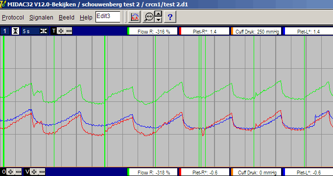
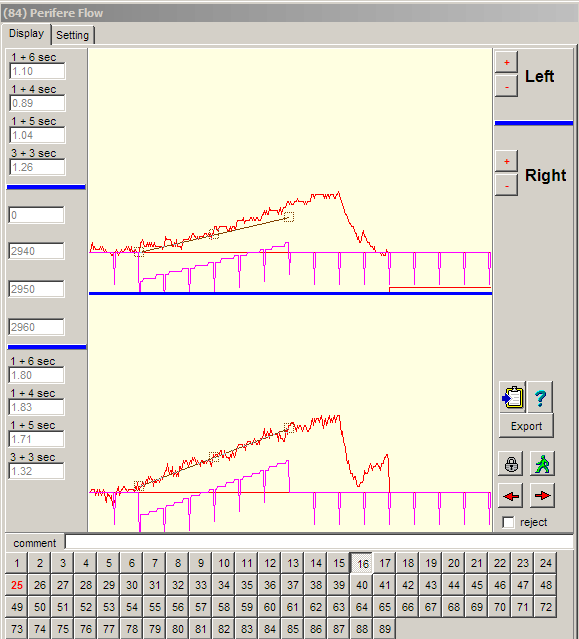
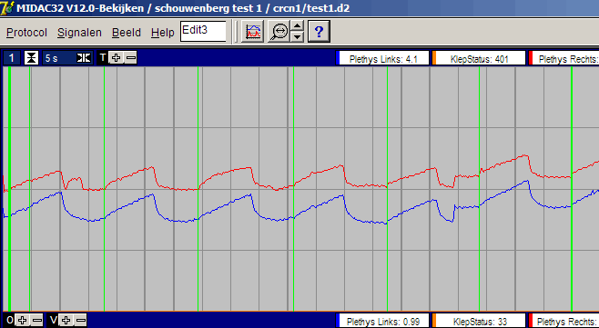
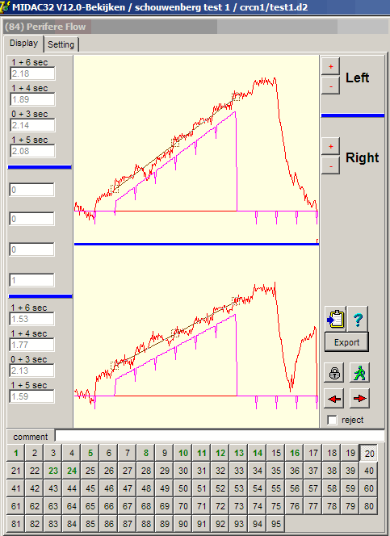
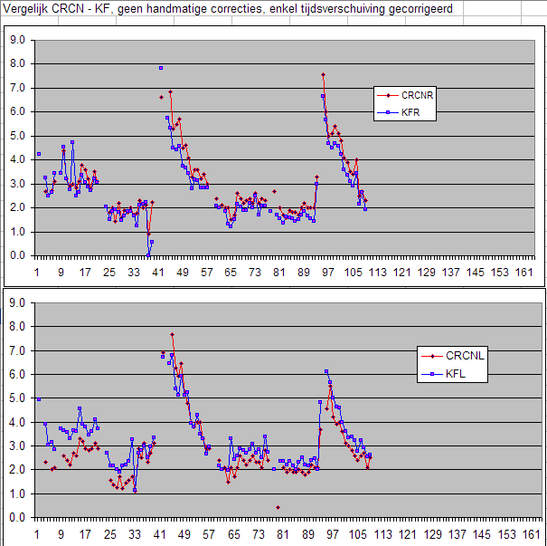
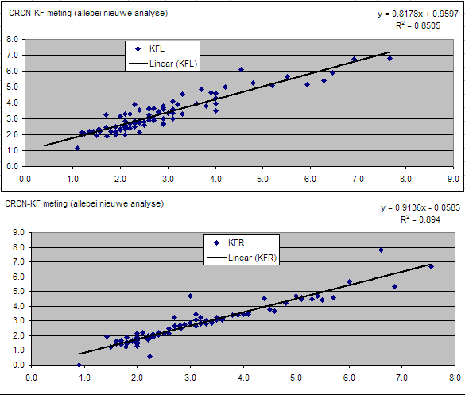
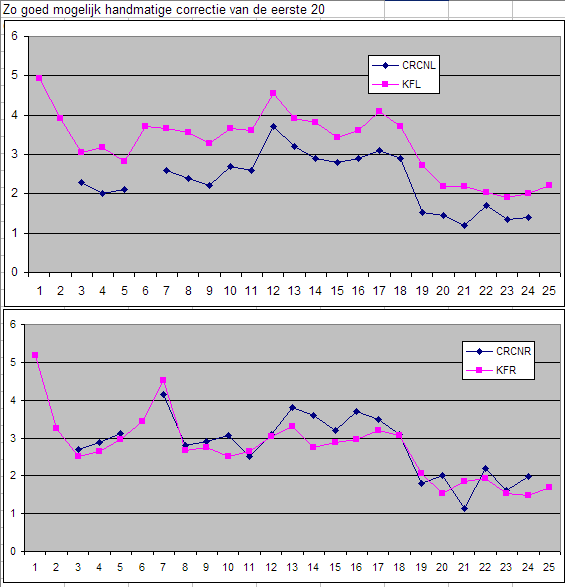
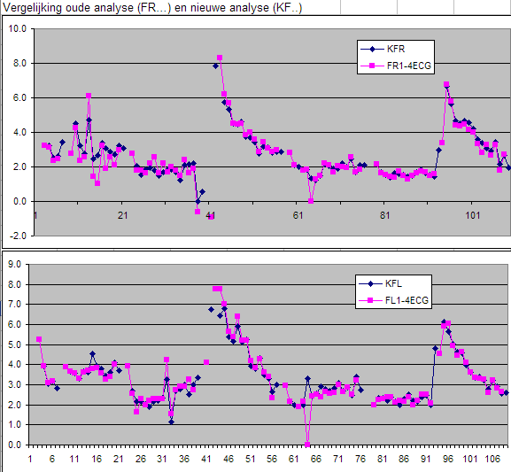
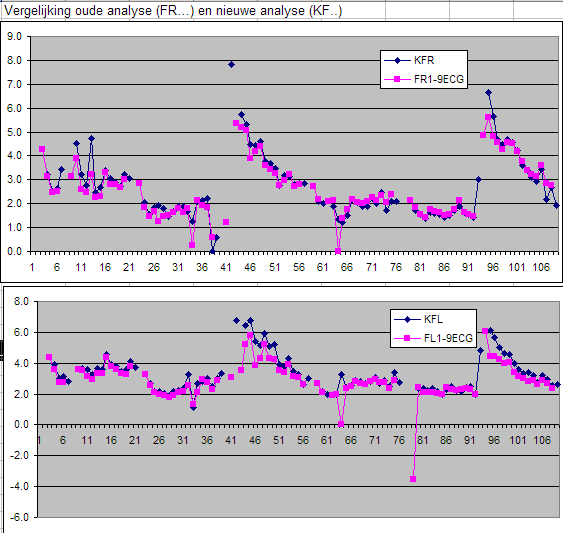
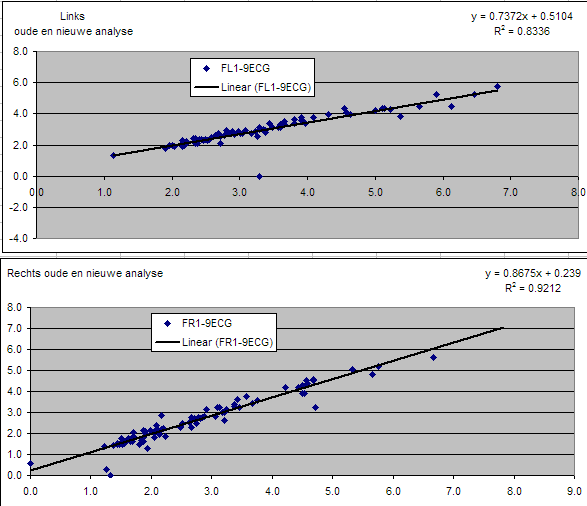

ID-SPON, SM, 12 april 2005
Vergelijking CRCN + Klinische Fysiologie
Inleiding
Door Patrick Meijer, Bas Gallenberg en Gerard Rongen is een simultane meting gedaan met het CRCN systeem en het systeem op de klinische fysiologie. Het doel was om zekerheid te verkrijgen over het correct functioneren van de nieuwe meetsystemen op het CRCN. Proefpersoon "TEST1" bevat de opname van de KF, proefpersoon "TEST 2" bevat de opname op het CRCN systeem.
Allereerst is er een links-rechts controle uitgevoerd, om er ook zeker van te zijn dat links op alle systemen daadwerkelijk links is. Vervolgens zijn de resultaten van het oude meetsysteem en het nieuwe meetsysteem met elkaar vergeleken, waarbij beide zijn geanalyseerd met het nieuwe analyse protocol. Hiervoor is ook een absolute kalibratie van het oudesysteem met externe apparatuur gedaan. Tenslotte is een vergelijking gemaakt van de analyse van het oude meetsysteem met zowel de oude methode alsook met de nieuwe methode.
Tijdens de analyse van deze gegevens zijn er nog enkele schoonheidsfoutjes in de bediening gevonden (geen fouten die het resultaat beinvloeden) die gelijkertijd zijn hersteld.
Waarnemingen
Conclusie
Links-rechts controle
Omdat de interventies aan beide armen tegelijkertijd zijn gedaan, is het allereerst van belang om zekerheid te hebben over Links-Rechts bepaling.
Hiervoor is een storing gezocht, die slechts in een van beide armen optreedt en op beide systemen zichtbaar is.
het CRCN systeem, we zien in meting 16, zowel in het ruwe signaal (Flow-R) alsook in gekalibreerde flow (Plet-R*), alsmede in de individuele flows eronder hetzelfde verschijnsel: een hobbel in de flow, net na het openen van de cuffs. Deze storing is niet in het linker kanaal aanwezig.


Deze storing komt overeen met meting 20 in de Klinische Fysiologie opname.


Vergelijking CRCN-KF

de korrelatie van bovenstaande plaatjes ziet er ook goed uit:

Met name in de rechterarm, is er bij de eerste metingen een behoorlijk verschil tussen KF en CRCN te zien,
daarom zijn deze opnamen voor zowel KF als CRCN nauwkeurig met de hand gecorrigeerd, dit leveret het volgende beeld:

Het verschil blijft helaas aanwezig.
Daarom is besloten het systeem op KF eens absouut te ijken: het blijkt dat zowel het rechter als het linker kanaal bij een 1% ijking, op de computer slechts een waarde van 0.9 te zien geeft. Deze ijking is zowel gedaan met een externe ijkbron alsook met het knopje op de Hokanson. Verder is deze ijking uitgevoerd over een range van 1 .. 5 Ohm.
Door deze kalibratie fout, zouden de verschillen tussen KF en CRCN nog groter worden !!
Vergelijking tussen oude en nieuwe analyse
Hievroo is een meting op het systeem van de KF, op de oude wijze ganalyseerd (F..) en dezelfde meting is ook met de nieuwe analyse methode (zonder handmatige correctie) geanalyseerd (KF..).
voor oude analyse op 4 hartslagen

en voor oude analyse op 9 hartslagen

Als we hiervan de korrelatie uitzetten, ziet er dit goed uit:
